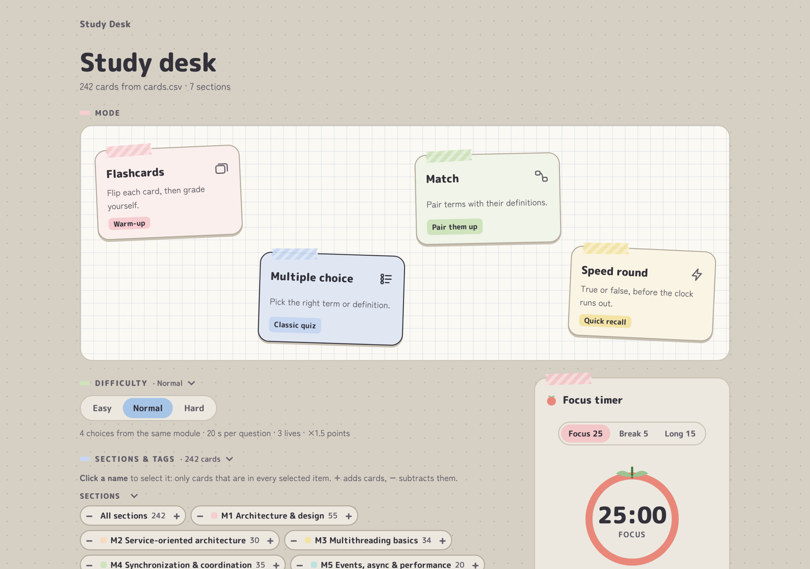

Study Desk
- When
- 2026
- Stack
- HTML, CSS, JavaScript (no frameworks or dependencies), Python 3 for the local server
- How
- Built with Claude Code: I wrote the spec, reviewed the code and tested every feature
- Try it
- fellobello.github.io/flashcard-study-app
- Code
- github.com/fellobello/flashcard-study-app (MIT license)

Why I built it
I needed to study a 242-card deck for my CSE 445 (distributed software development) midterm and wanted cards I could edit in a spreadsheet, with no account. Everything runs from one folder, works offline and opens by double-clicking.
What it does
- Four study modes: flashcards, multiple choice, matching, and a timed true/false speed round.
- Three difficulty levels that change time limits, answer choices, lives and scoring.
- CSV decks: each card has a section, tags, a term, a definition and an optional example.
- Progress tracking: got-it and study-again marks, starred cards and best scores.
- Pomodoro focus timer that keeps running between games, and export to Quizlet or Anki.
Interesting parts
Choosing cards with set operations
Sections, tags and piles (like "study again") each work as a set. Clicking a name
intersects it with the current selection, + adds its cards and
− subtracts them, so the deck you study is
(selected items, intersected) + added − subtracted. The picker shows that
formula and the resulting card count as you build it.
Saving progress without a backend
Opened straight from disk, the app saves progress in the browser. Run through the
small Python server instead (it only listens on 127.0.0.1), and progress
is written to a progress.json file next to the deck, so it survives clearing
the browser and can be copied between machines. The server also regenerates a built-in
copy of the deck whenever cards.csv changes, so the app still works when
opened as a plain file.